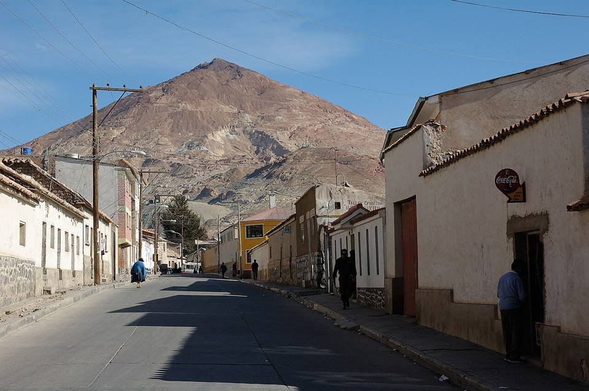
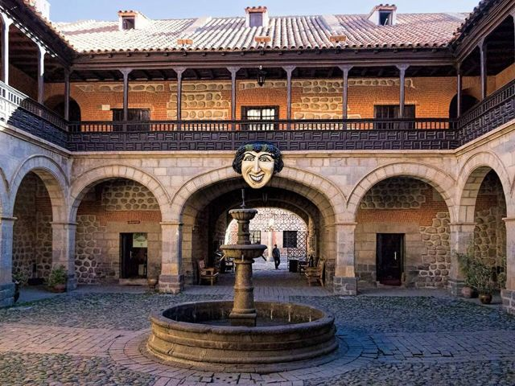
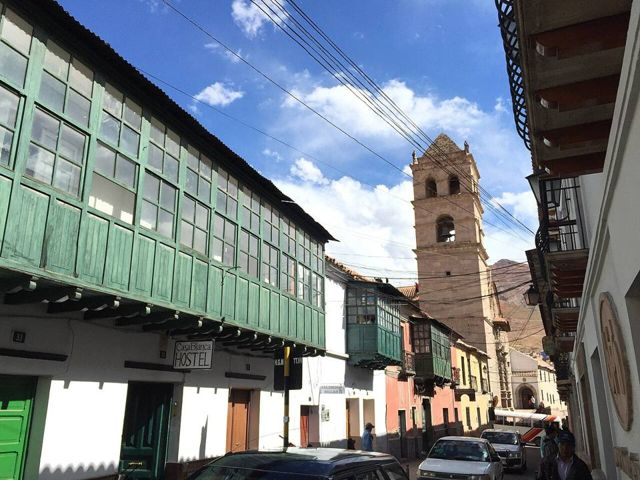
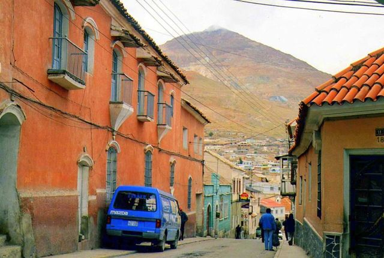
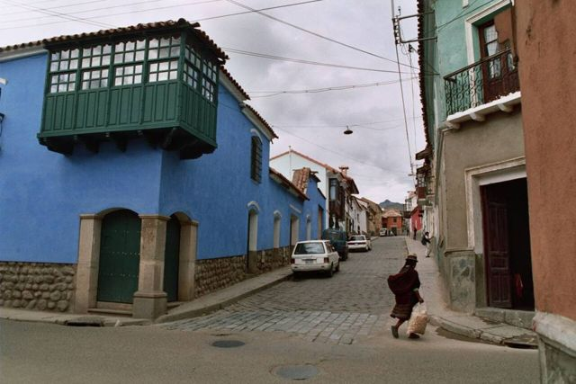
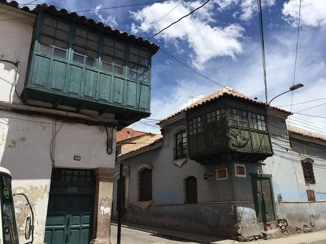
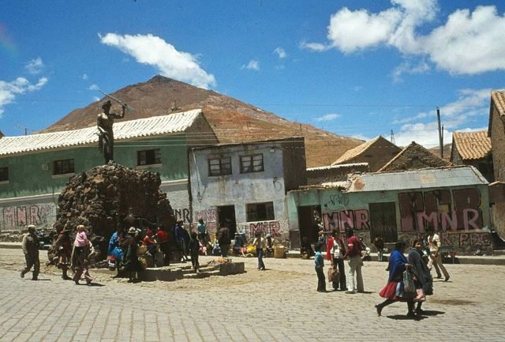

Potosí
Departamento de Potosí · Cultura e historia

En el siglo XVII, Potosí era una de las ciudades más grandes del mundo, tan poblada como Londres en esa época, gracias a la plata del Cerro Rico que enriqueció a España. Queda una ciudad colonial magnífica, iglesias barrocas y la Casa de la Moneda, donde se acuñaba la plata. Visitar una mina, todavía trabajada en condiciones muy duras, es una experiencia fuerte y conmovedora.
Qué hacer
- Casa Nacional de Moneda
- Visita a una mina cooperativa del Cerro Rico (dura pero inolvidable)
- Iglesias barrocas y convento de Santa Teresa
Qué comer
- KalapurkaLa sopa picante de maíz de Potosí, servida hirviendo con una piedra volcánica calentada en el fuego.
- SalteñaLa empanada boliviana: masa algo dulce y un relleno jugoso de carne, papa y aceituna. Se come en la mañana, ¡sin derramar el jugo!
- Sopa de quinuaSopa caliente de quinua y verduras, servida en refugios y comedores de altura. Perfecta cuando hace frío.
También aquí
- UNESCO Ciudad de Potosí
- Fiestas · UNESCO Ch'utillosA fines de agosto, Potosí celebra a San Bartolomé y San Ignacio de Loyola con una gran entrada de danzas de todo el país, entre tradiciones andinas y coloniales.
- Artesanía y mercados Plata de PotosíJoyas y pequeños objetos de plata, en la ciudad que acuñó la moneda del imperio español. Compra en tiendas, con sello.
- Mitos y leyendas El Tío de la minaEn lo profundo de las minas del Cerro Rico, una estatua con cuernos cuida las vetas: el Tío, dueño del mundo de abajo. Los mineros le ofrecen coca, alcohol y cigarrillos para que los proteja y les dé mineral.
Cómo llegar a Potosí
Ojo del Inca Carretera (bus, auto) · 30 min
Minibús a Tarapaya y luego 15 a 20 min a pie hasta la laguna.
Sucre Carretera (bus, auto) · 3 h
Buses o taxis compartidos (más rápidos) desde la Terminal de Potosí.
Cotagaita Carretera (bus, auto) · 3 a 4 h
Bus Potosí – Tupiza o Villazón (bajar en Cotagaita).
Uyuni Carretera (bus, auto) · 4 h
Buses frecuentes.
Camargo Carretera (bus, auto) · 4 a 5 h
Bus Potosí – Tarija (bajar en Camargo).
Oruro Carretera (bus, auto) · 5 a 6 h
Buses frecuentes.
Tarija Carretera (bus, auto) · 7 a 8 h
Buses de día o de noche.
La Paz Carretera (bus, auto) · 8 a 10 h (de noche)
Bus nocturno.
Fotos de Potosí

.jpg){kind=link}










Otros lugares de la región
 Ojo del Inca (Tarapaya)Una laguna de agua caliente perfectamente redonda, a 30 minutos de Potosí.
Ojo del Inca (Tarapaya)Una laguna de agua caliente perfectamente redonda, a 30 minutos de Potosí. SucreLa «ciudad blanca», capital constitucional: la ciudad colonial más bella del país.
SucreLa «ciudad blanca», capital constitucional: la ciudad colonial más bella del país. TarabucoGran feria dominical de las comunidades yampara, con tejidos notables.
TarabucoGran feria dominical de las comunidades yampara, con tejidos notables.- CandelariaPueblo yampara más allá de Tarabuco: antigua hacienda, tejidos y turismo rural.
- ZudáñezPueblo de valle ligado a las guerras de la independencia, al este de Sucre.
 Cráter de MaraguaUn sinclinal gigante en rojos y violetas, con pueblos de tejedores jalq'a.
Cráter de MaraguaUn sinclinal gigante en rojos y violetas, con pueblos de tejedores jalq'a.